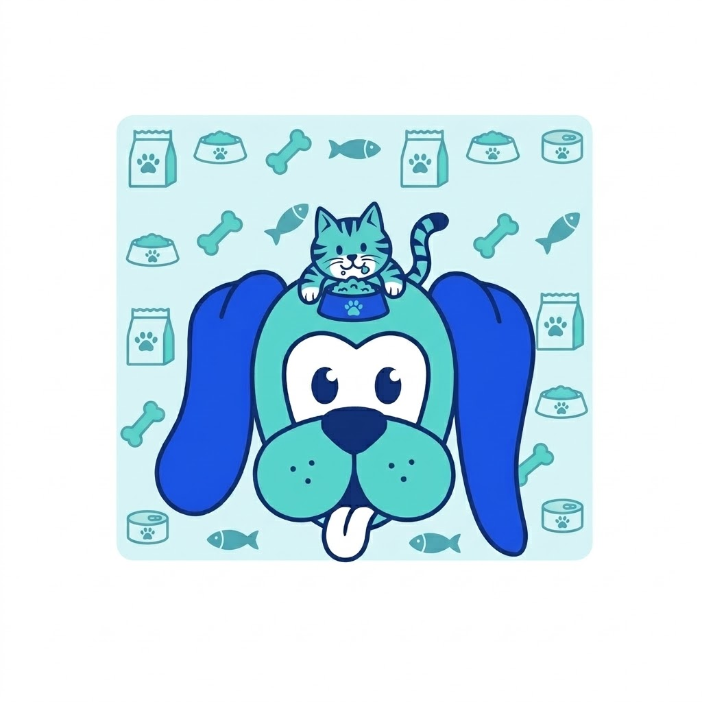
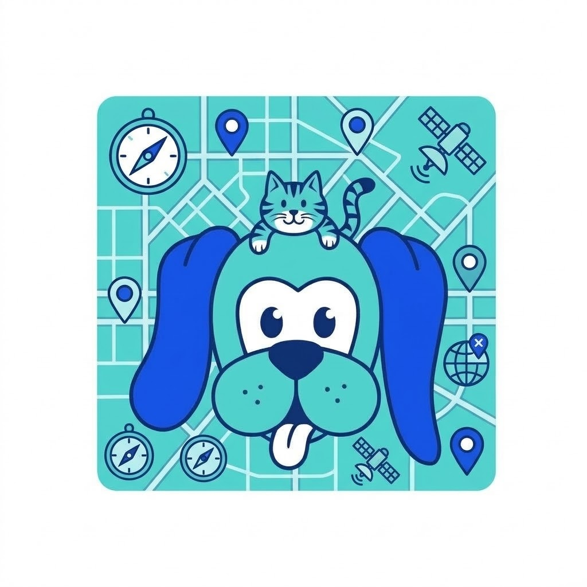
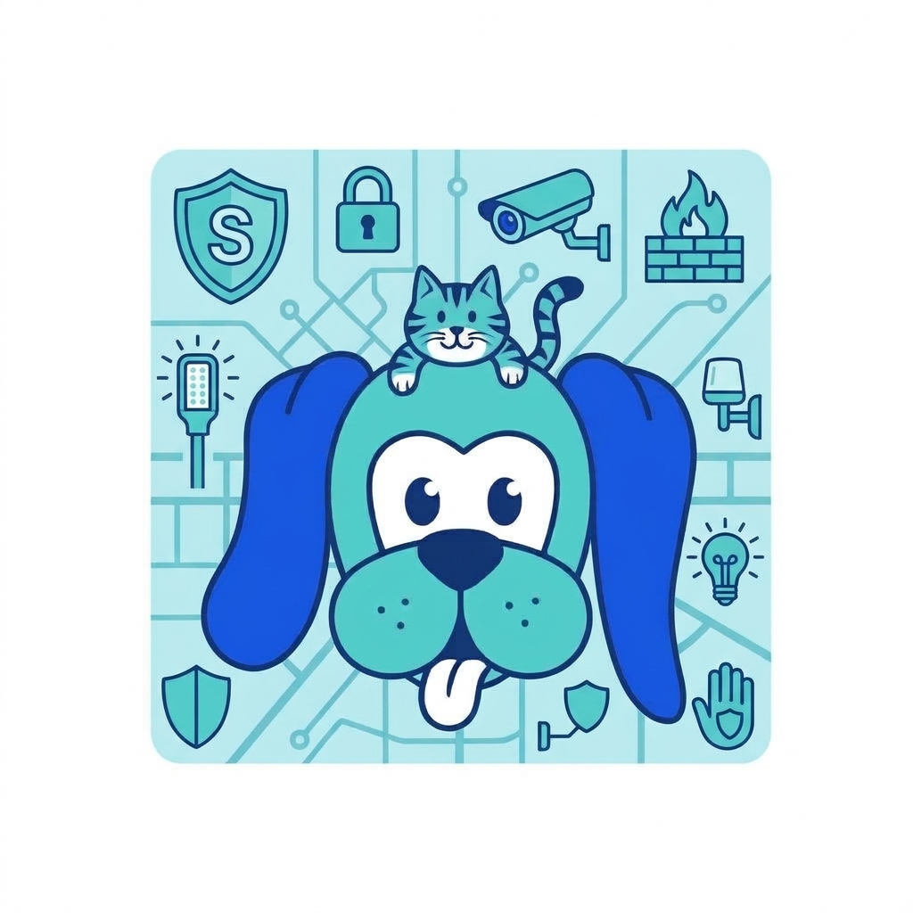

<ion-header [translucent]="true">
  <ion-toolbar>
    <ion-title>
      <ion-icon name="person-circle-outline"></ion-icon>Perfil
    </ion-title>
  </ion-toolbar>
</ion-header>

<ion-content [fullscreen]="true">


  <div class="element-section xd">
    <ion-card class="section-card" >
      <ion-card-content>
        <ion-card-title class="tittle-section">ALIMENTACION</ion-card-title>
      </ion-card-content>

      <ion-button [routerLink]="['/alimentacion-page']" class="section-button">
         
      </ion-button>
    </ion-card>

    <ion-card class="section-card">
      <ion-card-content>
        <ion-card-title class="tittle-section">TEMPERATURA</ion-card-title>
      </ion-card-content>
      <ion-button [routerLink]="['/temperatura-page']" class="section-button">
           
      </ion-button>
    </ion-card>
  </div>

  <div class="element-section">
    <ion-card class="section-card">
      <ion-card-content>
        <ion-card-title class="tittle-section">UBICACION</ion-card-title>
      </ion-card-content>
      <ion-button [routerLink]="['/ubicacion-page']" class="section-button">
        
      </ion-button>
    </ion-card>

    <ion-card class="section-card">
      <ion-card-content>
        <ion-card-title class="tittle-section">HOGAR</ion-card-title>
      </ion-card-content>
      <ion-button [routerLink]="['/hogar-page']" class="section-button">
      
      </ion-button>
    </ion-card>
  </div>

</ion-content>